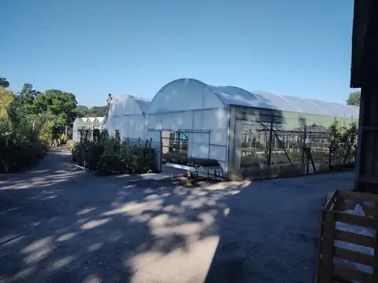
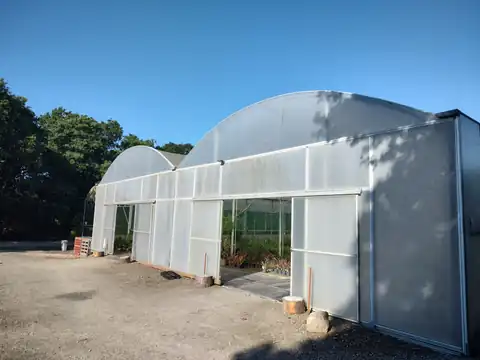
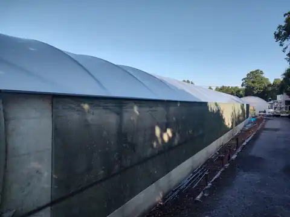
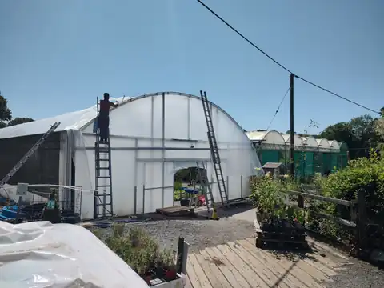

Established 2001 • England & Wales
Commercial polytunnel repairs, re-sheeting and installation
Polytunnels-UK specialises in commercial polytunnel re-sheeting, repairs, refurbishment, new installations and canopies for growers, nurseries, garden centres, farms, schools, colleges and similar organisations.
Enquiries normally receive a response within 48 hours.
Recent project
Bodmin nursery, Cornwall
Commercial polytunnel re-sheeting and refurbishment work completed at a nursery site in Bodmin, Cornwall.




Services
Polytunnel services for commercial sites
Commercial re-sheeting
Full strip and re-sheet services using polythene and PVC for tunnels from any manufacturer.
Repairs
Practical repairs to restore damaged or worn tunnel structures, covers and fittings where possible.
Refurbishment
Refurbishment from the ground to gutters to extend the working life of existing commercial tunnels.
New installations
Installation of new commercial polytunnels and alterations to existing structures.
Canopies
Canopy work for suitable commercial, education and growing environments.
Alterations
Structural changes and adaptations for changing crop, site or operational requirements.
Working area
England and Wales service area
Polytunnels-UK works across England and Wales, primarily from the South Coast northwards to approximately Cheshire, Derbyshire, Nottinghamshire and Lincolnshire, including the Isle of Wight and excluding the Isle of Man.
If your site is outside the primary area, please still enquire: work outside this area can be considered.
Quotation process
How quotation enquiries are handled
- Send your name, organisation, site location and details of the required work.
- Polytunnels-UK reviews the tunnel age, size, manufacturer if known, access and urgency.
- You will normally receive a response within 48 hours to discuss next steps or arrange a quotation.
Polytunnels-UK can guarantee its own labour only. Materials supplied or manufactured by third parties remain subject to the relevant supplier or manufacturer terms.
Get a Quote
Request a commercial polytunnel quotation
For urgent work, call 07414 784220 or email info@polytunnels-uk.com.
Enquiries normally receive a response within 48 hours.
Privacy
Information submitted through the quotation form is used to respond to your enquiry. This site does not introduce tracking cookies, advertising scripts or unnecessary third-party services.
Terms
Quotation details, timing and availability are confirmed directly by Polytunnels-UK. Polytunnels-UK can only guarantee its own labour and does not guarantee materials supplied or manufactured by third parties.